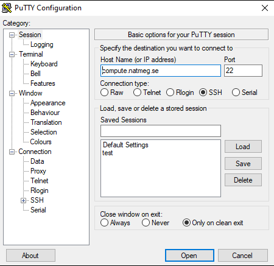
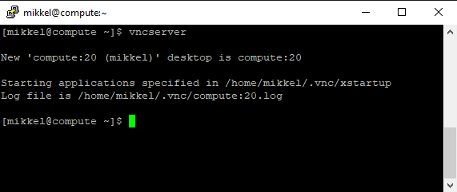
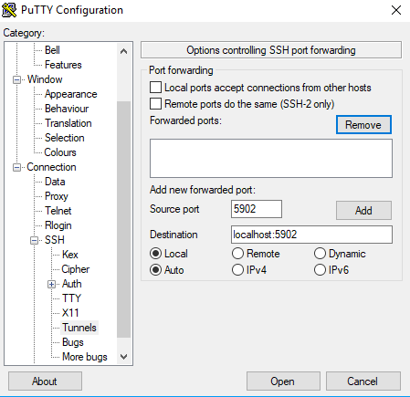
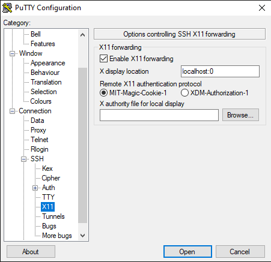
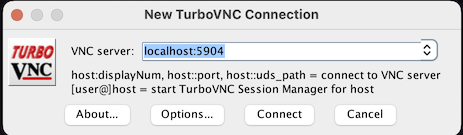

Connect to Compute
This is a guide on how to connect to NatMEG's Compute server for data analysis. To connect, you need a username and password for the server.
General principles
- We share the CPU and RAM so be aware of others when running multiple heavy processes.
- Avoid machine learning (ML). Since much ML processing works better with GPU this is not suitable for the server with very limited GPU.
- Avoid web browsing. As the server is not built for graphics, using Firefox consumes a lot of resources.
Connecting to Compute has three steps:
- Connect to KI's network (if working by remote)
- Connect to compute with username and password.
- Open VNC viewer (TurboVNC is recommended)
- Optionally, you can connect via remote-ssh using Visual Studio Code (note that you will not be able to view interactive plots)
The first time you connect you need to start a VNC server and configure your settings. The guide below explains the steps in detail.
Connect to NatMEG’s servers from outside KI's network
To connect to the NatMEG servers, you need to be on KI’s network. If you are working on KI you can go to step 2: Connect to Compute with VNC. If not, you first need to set up a VPN connection to KI.
To remote connect to KI's network, you need to have a KI account and username and then connect via KI's VPN service and the PointSharp app.
If you do not have a VPN connection to KI, you need to set this up first. This includes downloading a VPN app Cisco Anyconnect and a verification app PointSharp. If you do not have the PointSharp app already, you need to contact KI's IT support (fixit@ki.se) to get a verification code the first time you connect. You can find the official guide here: https://staff.ki.se/vpn-service.
When you are on KI's network—either by remote or physically present at KI—you can connect to Compute.
Setup a connection to Compute
If you have not connected to Compute before, you will need to do an initial setup.
If working on a Windows computer, you first need an SSH client (e.g. PuTTy if on PC www.putty.org) and a VNC client (e.g. SSVNC, https://sourceforge.net/projects/ssvnc/files/ssvnc/1.0.29 or TightVNC Viewer, www.tightvnc.com/download.php). Linux and Mac computers already support SSH. Mac computers also come with a VNC client already installed.
Once you have this in place, you can connect to compute and create a VNC session.
Follow this procedure to set up the VNC connection to Compute:
Windows: Open PuTTy. On the main tab enter “Host Name (or IP address)” as compute.natmeg.se. Use port 22 (typically the default), as shown below:

Click open. A terminal will pop up. Enter your username and password. You are now connected to Compute.
Linux/Mac: Open a new terminal window and type: ssh username@compute.natmeg.se, where usernameis your personal username. Enter your password when asked. You are now connected to Compute.
Create a new VNC session
When connected to “compute”, you must create a new VNC session (not to confuse with VPN). You do this in the terminal:
- Type:
vncserverto open a new VNC server. If you want the remote session window to be of a certain size, add a geometry flag, e.g.vncserver –geometry 2560x1340. Choose a geometry, i.e. screen resolution, that works with your own monitor. - Note the session number you get in return and use this to connect to your VNC session later.

- Type
vncserver –listto see your active VNC sessions. Typevncserver –kill :Nto close a server, whereNis the server's number, e.g.compute:20in the picture above. For example, if you want to change the geometry of the window later on.
The first time you create a VNC server you should be asked to create a password for the VNC sessions. Note that this password is only for the VNC and is different from the password you need to gain access to Compute. If you are not explicitly asked to create a password, type vncpasswd in the terminal to add/edit your VNC password. Please create a secure password. You will use the password every time you open the VNC window.
Mac: Exit the ssh session with exit.
Configure connection for future connection.
Windows: Open a new PuTTY. Go to the tab Connection -> SSH -> Tunnels. Add “Source port” as 59XX where XX is the number of your VNC server, e.g. 5902. Add “Destination” as localhost:59XX where XX is the number of your VNC server (see picture below). Click “Add”.

Go to the tab Connection -> SSH -> X11. Make sure “Enable X11 forwarding” is checked. Add “X display location” localhost:0.

Before proceeding, go back to the first tab and save the settings.
Mac: Open a new terminal and reconnect to Compute with SSH with the following command: ssh username@compute.natmeg.se -L 59XX:localhost:59XX where you replace username with your personal username and XX is your VNC session number. If you get a one-digit VNC id back, e.g. 4, your id is 04 (so you get :5904).
If you experience a black screen with an error when you connect, see here.
Connect to compute with VNC
Once the setup is complete, you connect to the servers using a VNC client.
We recommend TurboVNC as it is free, open source and you are able to adjust screen resolution and copy-paste between the VNC window and your local computer.

Windows:
- Open PuTTy. If you saved the settings (as instructed above), click “Open”. Then enter your username and password.
- When connected to the server, open your VNC client. Then enter your username and password.
If you set X11 forwarding, as described above, connect to “Remote Host”
localhost:0. If not, connect using your username + the IP address to compute (130.229.40.51) + an index (59) + your VNC session number. If you get a one-digit VNC session, e.g. 4, your id is 04 (so you get:5904).
Mac:
- Open a terminal and connect with SSH to Compute with the following command:
ssh username@compute.natmeg.se -L 59XX:localhost:59XXwhere you replaceusernamewith your personal username andXXis your VNC session number - When connected to the server, open your VNC client. Then enter your username and password.
Or if you don't want to use external software, in the Mac menu "Go" and click "Connect to Server...". Enter the address as
vnc://localhost:59XXwhereXXis your VNC session number.
Close VNC server
You can leave your VNC session running between uses and reuse the same session number. However, if you know that you will not use Compute resources in a while (e.g. over a vacation or similar), we appreciate if you close your open VNC servers.
To close a VNC server, connect to Compute and in the terminal write vncserver -kill :XX where XX is your VNC session number.